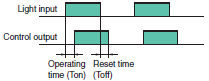

Building Automation
Industrial Automation
Power Automation & Safety


Bangladesh Distributor
Photoelectric Sensors
|
|
|
|
|
|
|
|
|
| Explanation of Terms | Troubleshooting |
Related Contents
- Photoelectric Sensors

| Item | Explanatory diagram | Meaning | |
| Sensing distance | Through- beam Sensors | The maximum sensing distance that can be set with stability for Through-beam and Retro-reflective Sensors, taking into account product deviations and temperature fluctuations. Actual distances under standard conditions will be longer than the rated sensing distances for both types of Sensor. | |
| Retro- reflective Sensors | |||
| Diffuse- reflective Sensors | The maximum sensing distance that can be set with stability for the Diffuse-reflective Sensors, taking into account product deviations and temperature fluctuations, using the standard sensing object (white paper). Actual distances under standard conditions will be longer than the rated sensing distance. | ||
| Limited- reflective Sensors | As shown in the diagram at left, the optical system for the Limited-reflective Sensors is designed so that the Emitter axis and the Receiver axis intersect at the surface of the detected object at an angle θ. With this optical system, the distance range in which regular-reflective light from the object can be detected consistently is the sensing distance. As such, the sensing distance can range from 10 to 35 mm depending on the upper and lower limits. | ||
| Mark Sensors (Contrast scanner) | As shown in the diagram of the optical system at the left, a coaxial optical system is used that contains both an emitter and a receiver in one lens. This optical system provides excellent stability against fluctuations in the distance between the lens and the sensing object (i.e., marks). (With some previous models, the emitter lens and receiver lens are separated.) The sensing distance is specified as the position where the spot is smallest (i.e., the center sensing distance) and the possible sensing range before and after that position. | ||
| Set range/ Sensing range | Distance- settable Sensors | Limits can be set on the sensing position of objects with Distance-settable Sensors. The range that can be set for a standard sensing object (white paper) is called the "set range." The range with the set position limits where a sensing object can be detected is called the "sensing range." The sensing range depends on the sensing mode that is selected. The BGS mode is used when the sensing object is on the Sensor side of the set position and the FGS mode is used when the sensing object is on the far side of the set position. | |
| Directional angle | Through-beam Sensors, Retro-reflective Sensors The angle where operation as a Photoelectric Sensor is possible. | ||
| Differential travel | Diffuse-reflective and Distance-settable Sensors The difference between the operating distance and the reset distance. Generally expressed in catalogs as a percentage of the rated sensing distance. | ||
| Dead zone | The Dead zone outside of the emission and reception areas near the lens surface in Mark Sensors, Distance-settable Sensors, Limited-reflective Sensors, Diffuse-reflective Sensors, and Retro-reflective Sensors. Detection is not possible in this area. | ||
| Response time |  | The delay time from when the light input turns ON or OFF until the control output operates or resets. In general for Photoelectric Sensors, the operating time (Ton) ≈ reset time (Toff). | |
| Item | Explanatory diagram | Meaning | ||
| Dark-ON operation (DARK ON) | The "Dark-ON" operating mode is when a Through-beam Sensor produces an output when the light entering the Receiver is interrupted or decreases. The "Light-ON" operating mode is when a Diffuse-reflective Sensor produces an output when the light entering the Receiver increases. | |||
| Light-ON operation (LIGHT ON) | ||||
| Ambient operating illumination | The ambient operating illumination is expressed in terms of the Receiver surface illuminance and is defined as the illuminance when there is a ±20% change with respect to the value at a light reception output of 200 lx. This is not sufficient to cause malfunction at the operating illuminance limit. | |||
| Standard sensing object | The standard sensing object for both Through-beam Sensors and Retro-reflective Sensors is an opaque rod with a diameter larger than the length of a diagonal line of the optical system. In general, the diameter of the standard sensing object is the length of the diagonal line of the Emitter/Receiver lens for Through-beam Sensors, and the length of a diagonal line of the Reflector for Retro-reflective Sensors. Size of Standard Sensing Object Using Reflector | |||
| Reflector models | Diagonal line of optical system | Sensing object | ||
| E39-R1/R1S/R1K | 72.2 mm | 75-mm dia. | ||
| E39-R2 | 100.58 mm | 105-mm dia. | ||
| E39-R3 | 41.44 mm | 45-mm dia. | ||
| E39-R4 | 26.77 mm | 30-mm dia. | ||
| E39-R6 | 56.57 mm | 60-mm dia. | ||
| E39-R9 | 43.7 mm | 45-mm dia. | ||
| E39-R10 | 66.47 mm | 70-mm dia. | ||
| E39-RS1 | 36.4 mm | 40-mm dia. | ||
| E39-RS2 | 53.15 mm | 55-mm dia. | ||
| E39-RS3 | 106.3 mm | 110-mm dia. | ||
| E39-R37 | 13.4 mm | 15-mm dia. | ||
| For Diffuse-reflective Sensors, the standard sensing object is a sheet of white paper larger than the diameter of the emitted beam. | ||||
| Minimum sensing object |  | Typical examples are given of the smallest object that can be detected using Through-beam and Retro-reflective Sensors with the sensitivity correctly adjusted to the light-ON operation level at the rated sensing distance. For Diffuse-reflective Sensors, typical examples are given of the smallest objects that can be detected with the sensitivity set to the highest level. | ||
| Minimum sensing object with slit attached | Through-beam Sensors Typical examples are given of the smallest object that can be detected using Through-beam Sensors with a Slit attached to both the Emitter and the Receiver as shown in the figure. The sensitivity is correctly adjusted to the Light-ON operating level at the rated sensing distance and the sensing object is moved along the length and parallel to the slit. | |||